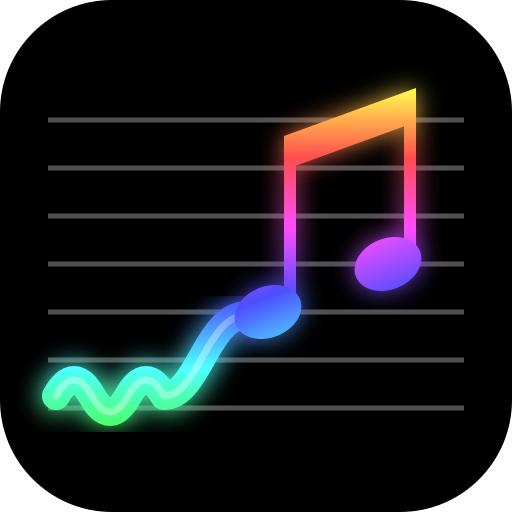

Pitch Spectrogram
See the notes you sing or play, live.
To install, tap Share then Add to Home Screen.
- Rows are the 12 notes, C at the bottom and B at the top.
- Color marks the note, and brightness shows how loud it is.
- Labels show the octave each note was last heard in.
Audio is processed on your device and never uploaded.
Source on GitHub